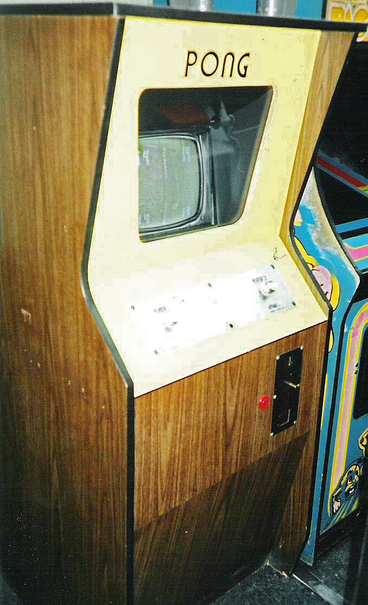
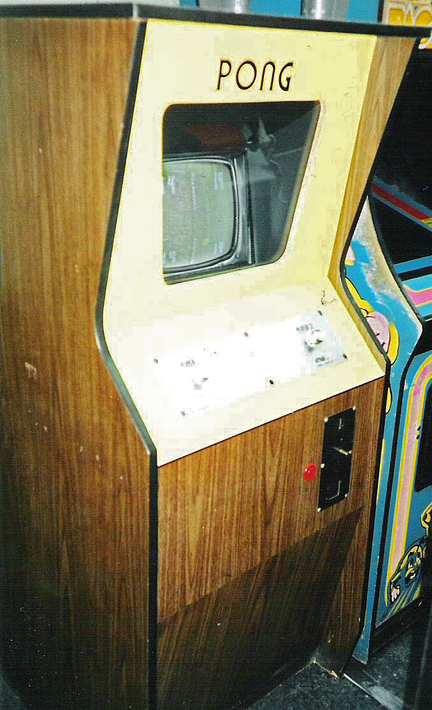

Game Story
Video games evolved over time from technical trials at universities in the 1950s to one of the most influential forms of leisure in the 21st century.
The beginnings!
In 1946, the first computer game for a tube computer was developed by Thomas T. Goldsmith Jr. and Estle Ray Mann and patented on January 25, 1947. The patent was granted on December 14, 1948.1951, the mathematical Nim game was presented with the help of a NIMROD computer; In 1952 there was the tic-tac-toe game OXO.
Designed in 1958 by American physicist William Higinbotham, Tennis for Two at Brookhaven National Laboratory, consisting of an analog computer and an oscillograph, is usually considered the first video game.
Further development was strongly dependent on the technical development of computer technology. Thus, the first, graphically still quite simple computer games on mainframe computers at American universities were created and were thus reserved for only a small number of students and scientists, such as Spacewar! from 1962 at the Massachusetts Institute of Technology (MIT).
The 1970s
At the beginning of the 1970s, electronic slot machines developed from the existing mass-produced and therefore relatively inexpensive television technology, which were also accessible to the public for the first time. Hence the term video game. The first successful game was Pong, by Atari founder Nolan Bushnell. He saw the game at a trade fair presentation at the game inventor Ralph Baer and developed it farther. Unlike today, the machines were found less in arcades, but – also accessible to children – in the entrances of supermarkets, cinemas, kiosks, chip shops, canteens, or other public places. A game for a mark was normal.
 


In the course of the 1970s, video games developed rapidly and became more attractive to home users in the form of video game consoles, e.B. from companies such as Atari or Magnavox; as a result, the public gambling halls gradually lost their supremacy in the field of video games. With the implementation of the very successful arcade game Space Invaders for the Atari 2600 came in 1979 the breakthrough for the home consoles, which rapidly developed into a mass article.
The 1980s
With the introduction of home and personal computers (PC), two technically separate types of video game developed for the time being: the console game (also called "video game") based on special game consoles and the computer game. In the beginning, computer games were mainly programmed for home computers such as the C64. The PCs with monochrome graphics and beeping loudspeaker sound, which were primarily designed for serious applications, were initially rather unsuitable for gaming. Only through improvements such as 16-color EGA graphics from 1984 and sound cards (e.g. Sound Blaster 1989) did the PC gradually become a competitor for home computers and consoles.
In 1983 the video game crash occurred: In North America, the market for game modules almost completely collapsed. While the video game industry had sales of $ 3 billion in 1982, that figure fell to $ 100 million in 1983. The reasons were:
Flooding of the market with a high number of bad games (especially for the Atari 2600) Unrealistic profit expectations of the mostly small manufacturing companies Superiority of home computers in terms of technology and possible applications Increasingly smaller price difference between console and home computer Computer games (see: software piracy) can be easily copied on cassettes and floppy disks and are therefore more attractive compared to video game modules that cannot be copied for private individuals (copy protection was a competitive disadvantage here, not an advantage, as is sometimes assumed - although of course the difference between console and Software manufacturer must be mentioned.) A new impetus for the video game industry came from Japan, whose video game market was dominated by domestic products and was therefore hardly affected by the American crash: Nintendo's 8-bit “Famicom” console, which appeared in 1983, became available after initial difficulties a great success. When Nintendo Entertainment System (NES) modified it for the western market, Nintendo tested the interest of American consumers in the 1985 Christmas season. 50,000 consoles could be sold limited to the city of New York. Then the NES was introduced in 1986 across North America and 1987 in Europe. But it was not until the release of Super Mario Bros. (Japan 1985, North America 1986), which surpassed all video games published up to then in length and complexity, that a real "Nintendomania" triggered: The sales figures rose and a new era of video games started.


Most game genres have their origins in this era. Role-playing games, racing games, jump ’n’ runs, beat ’em ups, adventures and many other game categories were developed during this time.
In 1989, with the Game Boy and the Atari Lynx, two handheld consoles with interchangeable modules came onto the market for the first time. The devices integrated a small, in the case of the Lynx, even colored LC display and control elements with the rest of the electronics in a handy housing.

The 1990s
In Europe there was a breakthrough of the so-called 16-bit consoles Super Nintendo Entertainment System (SNES) and Sega Mega Drive in the first half of the 1990s. These game consoles were extremely successful around the world. They offered gamers better graphics and better sound than the consoles and computer games of the 1980s. Another “handheld” console came onto the market with the Sega Game Gear.
Since the mid-1990s, the two video game areas for game consoles and PCs have been increasingly merged again for marketing reasons. Uniform storage media (such as the CD-ROM) and compatible hardware made it possible to develop games for different consoles as well as for PCs in parallel and thus more cheaply and for a broader mass market.

PlayStation and its associated controller (1994) The most important innovation on the console market was the switch from 2D to 3D graphics in the mid-90s with the help of the PlayStation, the Sega Saturn and the later released Nintendo 64. Although the earlier consoles were also able to display some 3D graphics, but only with the help of special ones Graphics chips. For the first time, 3D accelerator cards appeared on the PC. Although there were already less complex 3D graphics (e.g. in Doom, Duke Nukem 3D) that were calculated by the CPU, the CPU could and can only calculate relatively simple 3D graphics in real time. The 3D support of the graphics cards later became indispensable. Later generations of graphics cards had both 2D and 3D support firmly integrated.

The first network-compatible games for the PC came on the market. This created new ways to play that were previously only rudimentary. Multiplayer games were mostly limited to two players, with the Nintendo 64 mostly limited to four players. With the PC, depending on the possibility, well over 10 players could now be included in a game. First strategy and role-playing games with network and online capabilities appeared.

At the end of 1998 a new generation of consoles was introduced with the Sega Dreamcast. The PlayStation 2, the GameCube and the Xbox followed later. Sega's Dreamcast, with only 10 million units sold, would never see the end of this generation of consoles: Financially it barely escaped bankruptcy, the management of Sega decided to get out of the hardware business and changed from a console manufacturer to a pure software manufacturer.
The 2000s
The PlayStation 2, which is downward compatible with its predecessor, was initially very popular. Far behind were the other consoles of the same time.


Microsoft released the Xbox 360 in 2005. In 2006, the Nintendo Wii and PlayStation 3 from Sony followed. The game consoles are very different, for example in terms of hardware design and storage media, and were aimed at different target groups. Only the cheaper Wii was commercially successful. The Wii Remote had motion sensors. The other two consoles have a 64 instead of 32 bit processor data bus, a graphics resolution in HDTV standard as well as an optional hard disk and the option of playing DVD films or Blu-ray discs.

In terms of handhelds, the Nintendo DS (2004/2005) offered for the first time an additional screen as a touchscreen, a microphone for input and online capabilities. With the DSi, the Nintendo handheld received a hardware update in 2009. The latest version also offers two cameras and an SD card slot. The successor to the Nintendo DS, the Nintendo 3DS, was presented at an E3 trade fair. It can create a 3D effect without 3D glasses. The PlayStation Portable was particularly successful with optical media for the first time. The main platforms were:
- PlayStation 2 (2000), 128 bit
- Nintendo GameCube (2001, 2002 in Europe), 128 bit
- Xbox (2001, 2002 in Europe), 128 bit
- Xbox 360 (2004), 256 bit
- Wii (2006), 128 bit
- PlayStation 3 (2006, 2007 in Europe), 256 bit
The 2010s
- Nintendo 3DS (2011)
- PlayStation Vita (2011)
- Wii U (2012)
- PlayStation 4 (2013)
- Xbox One (2013)
- Nintendo Switch (2017)


The 2020s
The next-generation game consoles offer 4K at 120 fps, hardware acceleration for ray tracing, and take the first steps towards 8K gaming.
- PlayStation 5
- Xbox Series X